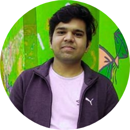

|  |
Varun mittal
Email id : vmittal461@gmail.com
mobile : 9871592628
|
Synopias
- A buidding professional, pursuing B.Tech (cse) from Ditm ,GGSIPU
- Held many prestigious postion & won servel accodlades in school & college for performing consistently well.
- Executing a start-up plan aimed towards building kforest at home .
- A sound team player , who can relate to the staff at all levels for acheving organization objectives.
Technical skills
|
java
|
⭐⭐⭐⭐ |
|
c\c++
|
⭐⭐⭐⭐ |
|
html
|
⭐⭐⭐⭐⭐ |
|
adobe photoshop
|
⭐⭐⭐ |
Extramural engagments
- Been part ofMicrosoft workshop in year 2017.
- particpated in national level science ,Mathematics and computer science olympiads in school.
- Organised events with team in quantum, the annual tech fest of DITM
- Active member of sanjay gandhi animal care center and fauna
foundation.
- Part of managing committe of salesforce seminars in collage.
- Founding member of "Normality", the Mental health club of Ditm
Acedemic Engagements
2020,pursuing B.Tech from GGSIPU, DITM, secured 75.49% marks.
201812th from CBSE,North Delhi public school, Delhi, secured 81% marks.
personal Dossier
| Date of birth |
: 12th july 2001 |
| address |
: Bs-66a Shalimar bagh, delhi 110088 |
| lingustic skills |
: English & hindi |